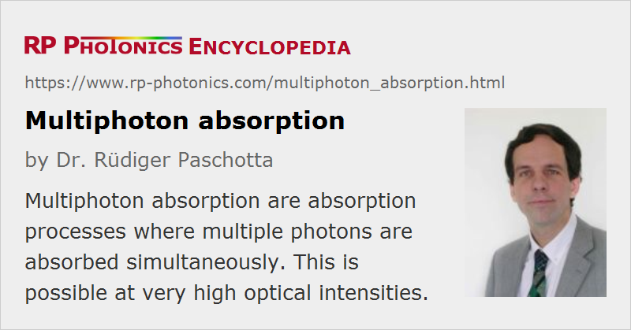

Multiphoton Absorption
Definition: absorption processes where multiple photons are absorbed simultaneously
More general term: optical absorption
German: Multiphotonen-Absorption
Category: physical foundations
How to cite the article; suggest additional literature
Author: Dr. Rüdiger Paschotta
In an insulator or semiconductor, linear electronic absorption can occur only if the photon energy is at least as large as the band gap energy. This is because the smallest amount of energy for an electronic excitations dictated by the bandgap. However, at high optical intensity it is possible to bridge that bandgap by simultaneous absorption of two or more lower-energy photons, where the sum of photon energies exceeds the bandgap energy. Such nonlinear absorption processes are called multiphoton absorption (or multi-photon absorption). The simplest variant is two-photon absorption, where only two photons are required. If the bandgap energy of a material is 2.8 times the photon energy of a laser beam, for example, only three-photon absorption and higher-order absorption processes can occur, since the photon energy is insufficient for linear and two-photon absorption.
While the absorption rate for linear absorption is simply proportional to the optical intensity, for multiphoton absorption processes of order n, the absorption rate is proportional to the nth power of the optical intensity. This implies that such absorption rates can be very small for low or moderate optical intensities, but can become dominant for very high optical intensities, as can be reached particularly with focused laser pulses. The absorption coefficient is proportional to the (n − 1)th power of the optical intensity.
Examples for Multiphoton Absorption
Multiphoton absorption processes are often involved in laser-induced damage when it occurs in transparent media. Transparency of such a medium means that linear electronic absorption is not possible for the considered optical wavelength, so that virtually no energy can be deposited by light with low optical intensity. However, multiphoton absorption can become substantial at high enough optical intensities, so that energy can be deposited, and a run-away process can start which ultimately leads to optical damage of the material. This is also exploited in laser material processing on transparent materials such as glasses.
Another example is fluorescence microscopy, where multiphoton absorption (mostly two-photon or three-photon absorption) is often utilized, where the excitation light from a femtosecond laser is strongly focused. Compared with linear excitation, the first practical advantage of multiphoton excitation is that a laser source with longer emission wavelength can be used, which is often less difficult to make, because a nonlinear frequency conversion stage is not needed. A second advantage is that longer-wavelength light can more easily propagate through some depth of material without being strongly absorbed, as long as the beam radius is large enough; only in the beam focus, where the optical intensities become substantially higher, multiphoton absorption processes become strong. A third advantage is that the preferential absorption in the beam focus helps one to obtain a higher longitudinal image resolution and less interference from fluorescence light created in other planes than the image plane.
Questions and Comments from Users
Here you can submit questions and comments. As far as they get accepted by the author, they will appear above this paragraph together with the author’s answer. The author will decide on acceptance based on certain criteria. Essentially, the issue must be of sufficiently broad interest.
Please do not enter personal data here; we would otherwise delete it soon. (See also our privacy declaration.) If you wish to receive personal feedback or consultancy from the author, please contact him e.g. via e-mail.
By submitting the information, you give your consent to the potential publication of your inputs on our website according to our rules. (If you later retract your consent, we will delete those inputs.) As your inputs are first reviewed by the author, they may be published with some delay.
See also: nonlinear absorption, two-photon absorption, fluorescence microscopy, laser-induced damage
and other articles in the category physical foundations
|  |
If you like this page, please share the link with your friends and colleagues, e.g. via social media:
These sharing buttons are implemented in a privacy-friendly way!